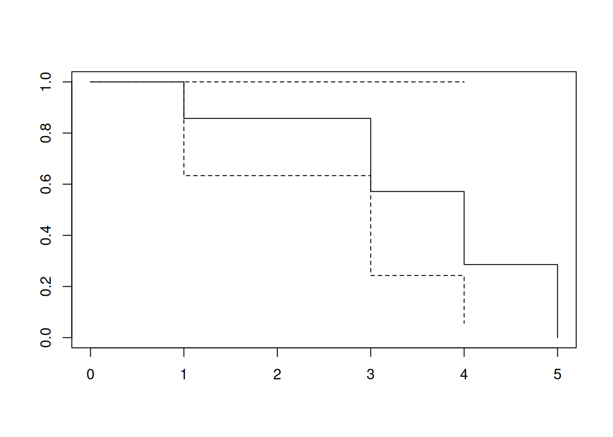
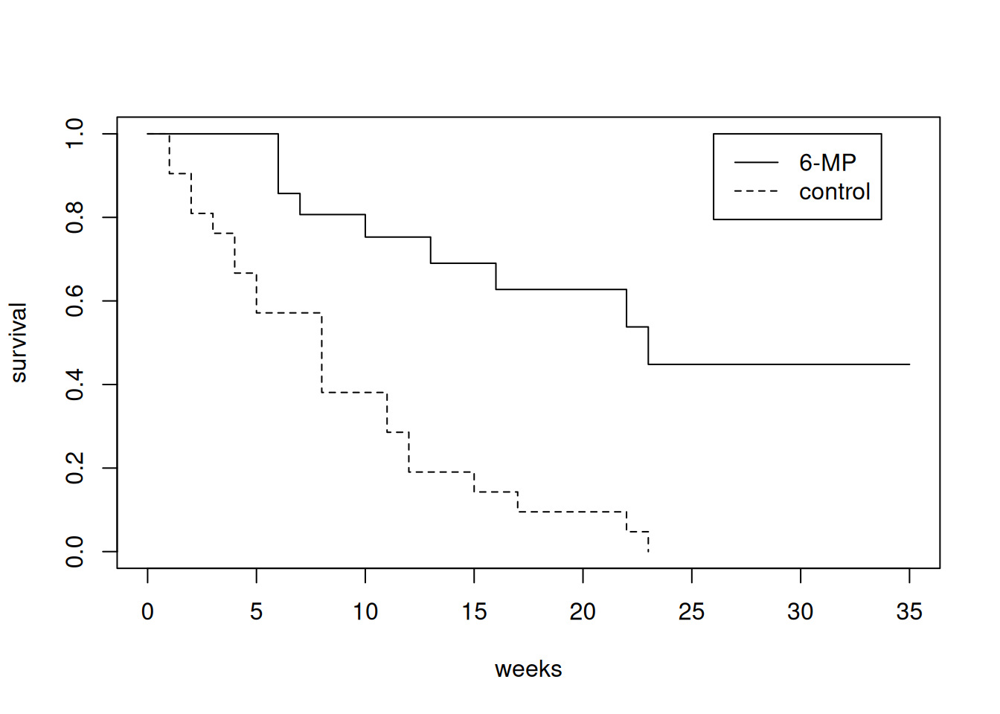
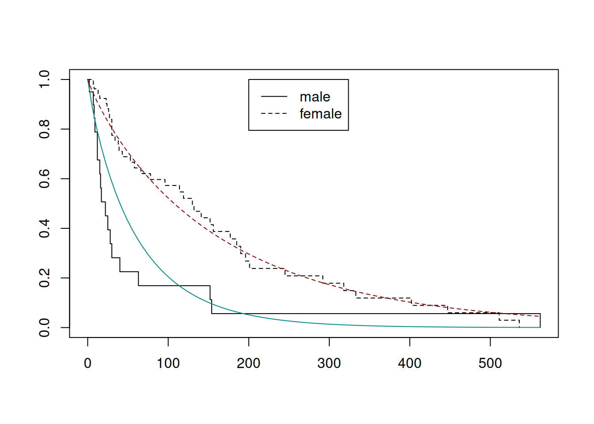
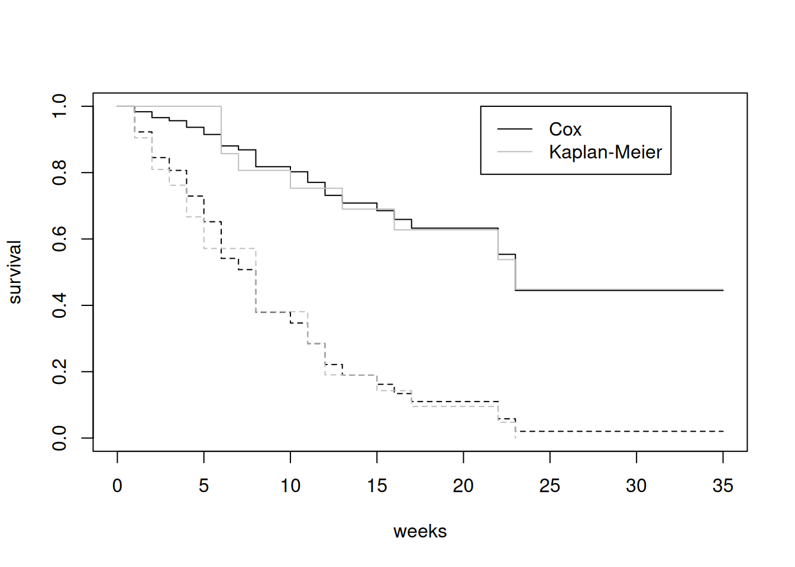
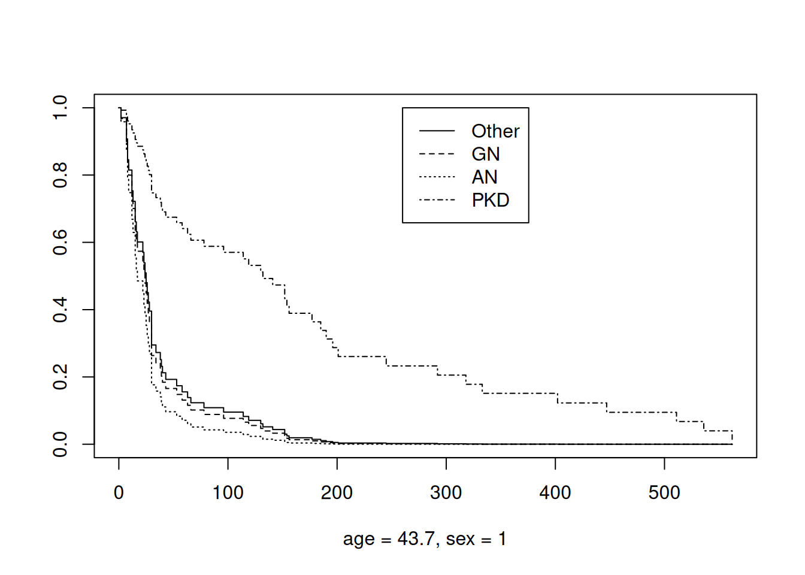

library(survival)
x <- c(1, 2, 3, 3, 4, 5, 5)
c <- c(4, 1, 2, 4, 4, 6, 2)
t <- pmin(x, c)
d <- t == x
Surv(time = t, event = d)[1] 1 1+ 2+ 3 4 5 2+# + は打ち切られたことを示す。survival パッケージはRで生存時間解析を行うためのパッケージで、生存関数やハザード関数に関する推定・検定などが実装されています。
survivalパッケージでは、Surv() 関数を用いて生存時間解析用のデータセット（Survオブジェクト）を作成することができます。Survオブジェクトは、生存時間（観察時間）と打ち切り指標を表すベクトルの組をもとにして作成されます。
個人 i=1,2,... について、死亡や要介護状態への移行などの注目するイベント（死亡等）による集団からの脱退と、注目しないイベントによる脱退や観察の終了（打ち切り）が発生するとします。死亡等の発生時間を X_i 、打ち切りの発生時間を C_i とすると、いずれか早い方の発生時間 T_i = min(X_i, C_i) だけが観測されます。生存時間解析においては、死亡等が観察されたか打ち切られたかを表す変数を D_i として、\{(T_i, D_i)\}_{i=1,2,...} を収集したデータセットが分析対象とされます。
library(survival)
x <- c(1, 2, 3, 3, 4, 5, 5)
c <- c(4, 1, 2, 4, 4, 6, 2)
t <- pmin(x, c)
d <- t == x
Surv(time = t, event = d)[1] 1 1+ 2+ 3 4 5 2+# + は打ち切られたことを示す。survfit() 関数を用いると、Surv オブジェクトに基づいて生存関数 S(t) に関するKaplan-Meier推定を行うことができます。Kaplan-Meier推定法では、S(t) を下式で推定します。
\hat{S}(t)=\Pi_{i:\ t_i{\lt}t}(1-n.event_i/n.risk_i)
summary(sample.sf <- survfit(Surv(t, d) ~ 1))Call: survfit(formula = Surv(t, d) ~ 1)
time n.risk n.event survival std.err lower 95% CI upper 95% CI
1 7 1 0.857 0.132 0.6334 1
3 3 1 0.571 0.249 0.2429 1
4 2 1 0.286 0.237 0.0561 1
5 1 1 0.000 NaN NA NAplot(sample.sf)
# 累積ハザード関数の Nelson-Aalen 推定量
data.frame(sample.sf$time,
cumsum(sample.sf$n.event / sample.sf$n.risk)) sample.sf.time cumsum.sample.sf.n.event.sample.sf.n.risk.
1 1 0.1428571
2 2 0.1428571
3 3 0.4761905
4 4 0.9761905
5 5 1.9761905処置の有無などを表す特徴量によって2群に分けられるときは、formula の ~ の右側にその特徴量を指定することで、生存関数の推定を群ごとに行うことができます。
data(gehan, package = "MASS")
str(gehan)'data.frame': 42 obs. of 4 variables:
$ pair : int 1 1 2 2 3 3 4 4 5 5 ...
$ time : int 1 10 22 7 3 32 12 23 8 22 ...
$ cens : int 1 1 1 1 1 0 1 1 1 1 ...
$ treat: Factor w/ 2 levels "6-MP","control": 2 1 2 1 2 1 2 1 2 1 ...plot(survfit(Surv(time, cens) ~ treat, data = gehan),
lty = 1:2, xlab = "weeks", ylab = "survival")
legend(26, 1, levels(gehan$treat), lty = 1:2)
2群の差についての統計的検定として、survdiff() 関数を用いてログランク検定を行うことができます。ログランク検定では、生存関数が同じであるという帰無仮説がデータによってテストされます。
survdiff(Surv(time, cens) ~ treat, data = gehan)Call:
survdiff(formula = Surv(time, cens) ~ treat, data = gehan)
N Observed Expected (O-E)^2/E (O-E)^2/V
treat=6-MP 21 9 19.3 5.46 16.8
treat=control 21 21 10.7 9.77 16.8
Chisq= 16.8 on 1 degrees of freedom, p= 4e-05 survreg() 関数を用いることで、生存関数 S(x) の形状として指数分布、ワイブル分布、対数ロジスティック分布などを仮定したパラメトリック推定を行うことができます。
str(kidney)'data.frame': 76 obs. of 7 variables:
$ id : num 1 1 2 2 3 3 4 4 5 5 ...
$ time : num 8 16 23 13 22 28 447 318 30 12 ...
$ status : num 1 1 1 0 1 1 1 1 1 1 ...
$ age : num 28 28 48 48 32 32 31 32 10 10 ...
$ sex : num 1 1 2 2 1 1 2 2 1 1 ...
$ disease: Factor w/ 4 levels "Other","GN","AN",..: 1 1 2 2 1 1 1 1 1 1 ...
$ frail : num 2.3 2.3 1.9 1.9 1.2 1.2 0.5 0.5 1.5 1.5 ...sreg <- survreg(Surv(time, status) ~ as.factor(sex),
data = kidney, dist = "weibull")
# Kaplan-Meier 推定値
plot(survfit(Surv(time, status) ~ as.factor(sex), data = kidney), lty = 1:2)
# Weibull分布モデルのグラフ
shape <- 1 / sreg$scale # 形状パラメータ
scaleM <- exp(coef(sreg)[1]) # 尺度パラメータ
scaleF <- exp(coef(sreg)[1] + coef(sreg)[2])
curve(1 - pweibull(x, shape, scaleM), add = TRUE, col = "darkcyan")
curve(1 - pweibull(x, shape, scaleF), add = TRUE, col = "darkred", lty = 2)
legend(200, 1, c("male", "female"), lty = 1:2)
# パラメータの確認
cat(paste0("weibull params\n shape: ", round(shape, 4),
"\n scale(male): ", round(scaleM, 4),
"\n scale(female): ", round(scaleF, 4)))weibull params
shape: 0.9041
scale(male): 60.0208
scale(female): 160.9822coxph() 関数を用いることで、Cox比例ハザード回帰モデル（Cox proportional hazards regression model）を構築することができます。
Kaplan-Meier推定では集団ごとにデータを分けることで生存関数を推定しましたが、Cox比例ハザードモデルでは、個人ごとのハザード関数を説明変数（共変量）Z に基づく線形予測子を用いて以下の式のようにモデル化し、回帰係数を一種の最尤法で推定します。
\lambda_i(t; Z)=\lambda_0(t)\ exp({\beta}^{T}Z)
比例ハザードモデルは、ベースラインハザード関数（潜在基礎ハザード関数） \lambda_0(t) の部分にノンパラメトリックな仮定を残しつつ、相対ハザード exp(\beta^TZ) の部分をパラメトリックにモデル化し、推定することから、セミパラメトリックモデルに分類されます。
summary(gehan.cox <- coxph(Surv(time, cens) ~ treat, gehan))Call:
coxph(formula = Surv(time, cens) ~ treat, data = gehan)
n= 42, number of events= 30
coef exp(coef) se(coef) z Pr(>|z|)
treatcontrol 1.5721 4.8169 0.4124 3.812 0.000138 ***
---
Signif. codes: 0 '***' 0.001 '**' 0.01 '*' 0.05 '.' 0.1 ' ' 1
exp(coef) exp(-coef) lower .95 upper .95
treatcontrol 4.817 0.2076 2.147 10.81
Concordance= 0.69 (se = 0.041 )
Likelihood ratio test= 16.35 on 1 df, p=5e-05
Wald test = 14.53 on 1 df, p=1e-04
Score (logrank) test = 17.25 on 1 df, p=3e-05# 対照群"control"のハザード関数は、処置群"6MP"の4.82倍
Z <- data.frame(treat = levels(gehan$treat))
plot(survfit(gehan.cox, Z), lty = 1:2, xlab = "weeks", ylab = "survival")
lines(survfit(Surv(time, cens) ~ treat, gehan), lty = 1:2, col = "gray")
legend(21, 1, c("Cox", "Kaplan-Meier"), lty = 1, col = c("black", "gray"))
kidney.cox <- coxph(Surv(time, status) ~ age + as.factor(sex) + disease,
data = kidney)
summary(kidney.cox)Call:
coxph(formula = Surv(time, status) ~ age + as.factor(sex) + disease,
data = kidney)
n= 76, number of events= 58
coef exp(coef) se(coef) z Pr(>|z|)
age 0.003181 1.003186 0.011146 0.285 0.7754
as.factor(sex)2 -1.483137 0.226925 0.358230 -4.140 3.47e-05 ***
diseaseGN 0.087957 1.091941 0.406369 0.216 0.8286
diseaseAN 0.350794 1.420195 0.399717 0.878 0.3802
diseasePKD -1.431108 0.239044 0.631109 -2.268 0.0234 *
---
Signif. codes: 0 '***' 0.001 '**' 0.01 '*' 0.05 '.' 0.1 ' ' 1
exp(coef) exp(-coef) lower .95 upper .95
age 1.0032 0.9968 0.98151 1.0253
as.factor(sex)2 0.2269 4.4067 0.11245 0.4579
diseaseGN 1.0919 0.9158 0.49238 2.4216
diseaseAN 1.4202 0.7041 0.64880 3.1088
diseasePKD 0.2390 4.1833 0.06939 0.8235
Concordance= 0.697 (se = 0.041 )
Likelihood ratio test= 17.65 on 5 df, p=0.003
Wald test = 19.9 on 5 df, p=0.001
Score (logrank) test = 20.13 on 5 df, p=0.001Z <- data.frame(age = mean(kidney$age), sex = 1,
disease = levels(kidney$disease))
# 連続変数は平均値がベースラインになるように変換されている。
predict(kidney.cox, Z) 1 2 3 4
0.00000000 0.08795655 0.35079420 -1.43110776 plot(survfit(kidney.cox, Z), lty = 1:4, xlab = "age = 43.7, sex = 1")
legend(260, 1, levels(kidney$disease), lty = 1:4)